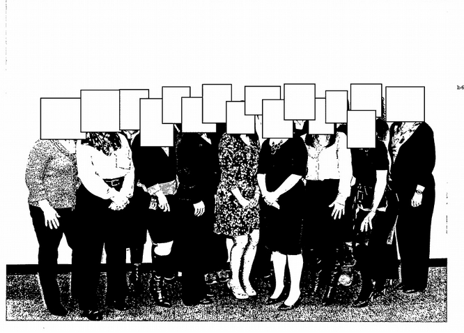
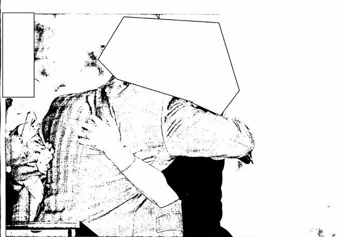

I study how groups live with the models made of them.

FBI response to a FOIA request about a retirement party: every attendee's face is covered with a white box, marked with exemption b6 (personal privacy).

From the same release: an embrace covered by one irregular polygon. The redaction follows the shape of the gesture and removes the people in it.